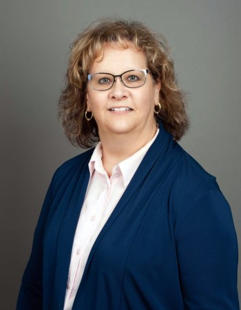
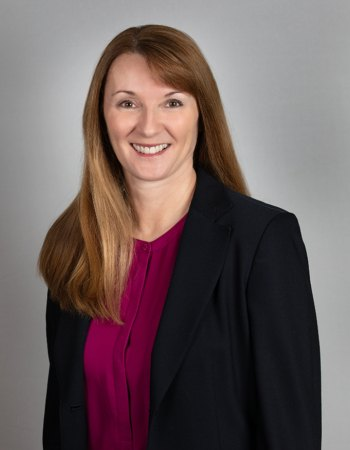
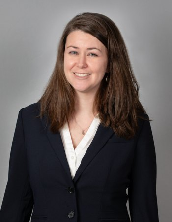
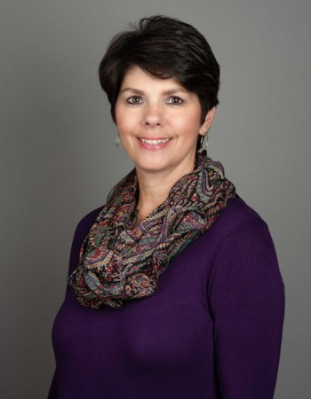

Our Team
The people who will actually be working on your return — the same ones next year.
Leadership
The partners
Rick Bishop, CPA
Founding Partner
Rick founded Bishop & Adkins in 1991. He specializes in tax planning and preparation, business consulting, business sales and acquisitions, cash flow management, business start-ups and financial statements, and works extensively with estates and trusts.
Rob Adkins, CPA/PFS, CFP®
Partner
Rob joined the firm in 1995 and became a partner in 1998. Alongside his CPA license he holds the Personal Financial Specialist and CERTIFIED FINANCIAL PLANNER™ credentials, bringing a planning perspective to the tax work.
Donna Singer, CPA/PFS
Partner
Donna joined Bishop & Adkins in 2008 and became a partner the same year. She brings more than 30 years of public accounting experience along with four years in the tax department headquarters of a Fortune 500 company. Donna has been a CPA since 1983 and a Personal Financial Specialist since 2000.
Our staff
The team

Cathy Davis, CPA
Certified Public Accountant
Cathy works with individual and business clients across the firm's tax and accounting practice.
Cathy Vincent, EA
Enrolled Agent
Cathy joined the firm in 2004. She specializes in accounting, payroll, tax return preparation and financial statements.

Lorie Zimmer, CPA/PFS
Certified Public Accountant
Lorie is a CPA and Personal Financial Specialist working with the firm's individual and business clients.

Stephanie Powers
Client Services
Stephanie supports clients through the firm's tax and accounting engagements.

Gina Blair
Office Manager
Gina manages the day-to-day operations of the office and is often the first person clients speak with.
Let’s talk about your situation
Whether it’s a return, a business decision or an estate you didn’t expect to be managing, a short conversation is usually the fastest way forward.
(410) 893-7453